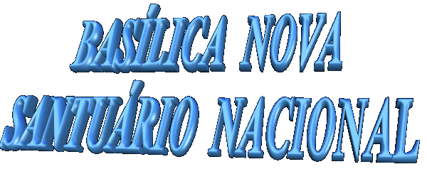
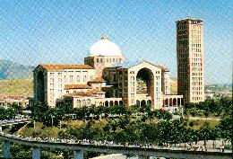
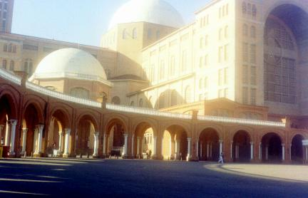

 OS PADRES REDENTORISTAS
- Chegaram no dia 28 de Outubro
de 1894 à cidade de Aparecida, com a missão de evangelizar o povo,
guardar e difundir a devoção à NOSSA SENHORA APARECIDA.
Era um grupo de padres alemães, da região da Baviera, sob a
direção do Padre Gebardo Wiggermann. Também vindos de outros
países da Europa, missionários redentoristas se espalharam pelo
Brasil, com vocação para prestar trabalho pastoral em diversos
Santuários, além do Santuário Nacional, aproximando-se do
povo, derrubando barreiras culturais e acolhendo a religiosidade
popular. Deram importância a catequese com linguagem simples e
direta, além exercitar a vida sacramental através da Eucaristia
e Reconciliação. Valorizaram as romarias e devoções
populares, como maneira honesta de rezar, reconciliar, conviver
santamente e celebrar a vida. Notamos também, que nos
Santuários onde assumiram, tomaram a iniciativa no campo das
comunicações sociais, fundando editora, jornais, revistas e
rádios. Sem dúvida, estas providências ajudaram de maneira
preponderante, na divulgação do movimento de cada Santuário,
além de mostrar às pessoas através de suas divulgações, a
grandeza e o encantador amor que nossa MÃE SANTÍSSIMA
sempre manifestou por sua maternal e poderosa intercessão
junto a DEUS, em benefício de todos os seus filhos.
OS PADRES REDENTORISTAS
- Chegaram no dia 28 de Outubro
de 1894 à cidade de Aparecida, com a missão de evangelizar o povo,
guardar e difundir a devoção à NOSSA SENHORA APARECIDA.
Era um grupo de padres alemães, da região da Baviera, sob a
direção do Padre Gebardo Wiggermann. Também vindos de outros
países da Europa, missionários redentoristas se espalharam pelo
Brasil, com vocação para prestar trabalho pastoral em diversos
Santuários, além do Santuário Nacional, aproximando-se do
povo, derrubando barreiras culturais e acolhendo a religiosidade
popular. Deram importância a catequese com linguagem simples e
direta, além exercitar a vida sacramental através da Eucaristia
e Reconciliação. Valorizaram as romarias e devoções
populares, como maneira honesta de rezar, reconciliar, conviver
santamente e celebrar a vida. Notamos também, que nos
Santuários onde assumiram, tomaram a iniciativa no campo das
comunicações sociais, fundando editora, jornais, revistas e
rádios. Sem dúvida, estas providências ajudaram de maneira
preponderante, na divulgação do movimento de cada Santuário,
além de mostrar às pessoas através de suas divulgações, a
grandeza e o encantador amor que nossa MÃE SANTÍSSIMA
sempre manifestou por sua maternal e poderosa intercessão
junto a DEUS, em benefício de todos os seus filhos.
OUTROS
ACONTECIMENTOS - Em 1904 a imagem foi solenemente coroada por
determinação de Sua Santidade o Papa Pio X, com o nome de
NOSSA SENHORA DA CONCEIÇÃO APARECIDA.
Em 1930,
Sua Santidade o Papa Pio XI proclamou NOSSA SENHORA DA
CONCEIÇÃO APARECIDA,
"RAINHA e PADROEIRA do BRASIL".
A idéia de
construir a Nova Basílica nasceu com Dom José Gaspar de Afonseca,
bispo do Rio de Janeiro, em sua visita oficial de 12 de Outubro de 1940
à PARÓQUIA DE NOSSA SENHORA APARECIDA. Na continuidade,
para concretizar o seu desejo, agilizou as primeiras providências,
escolhendo o terreno, determinando uma comissão para o estudo
técnico e a confecção de um primeiro esboço que chamou de
"A CIDADE DE
NOSSA SENHORA APARECIDA".
Com o falecimento
de Dom José Gaspar em 1944, assumiu a diocese Dom Carlos Carmelo de
Vasconcelos Motta, que também desde o início manifestou o
propósito de continuar os estudos e iniciar a construção.
CONSTRUÇÃO DA
BASÍLICA - Em princípio
de 1946, foi escolhido o local atual para o Santuário, no Morro das Pitas,
bairro da Ponte Alta, próximo ao Porto de Itaguaçú e bem próximo de
onde era a casa de Felipe Pedroso, na qual a imagem permaneceu por
quase 10 anos, antes de ir para a Igreja do Morro dos Coqueiros,
hoje Basílica Velha.
A colocação
da pedra fundamental nos alicerces da Basílica aconteceu no dia 10
de Setembro de 1946, pelas mãos do Cardeal Patriarca de Lisboa,
Dom Manuel Gonçalves Cerejeira, que trouxe terra de Fátima e
depositou no cofre da pedra angular, na presença de todos os
Cardeais do Brasil, autoridades religiosas, civis e militares.
O projeto
é de autoria do Engenheiro Benedito Calixto de Jesus, e foi aprovado
pela Comissão Pontifícia da Santa Sé.
Os serviços
de terraplenagem começaram em Setembro de 1952.
A construção
teve efetivo apoio do Governo do Estado de São Paulo, principalmente
do Governador Dr. Lucas Nogueira Garcez, e também do Governo
Federal, primordialmente do Presidente da Republica Dr. Juscelino
Kubitschek de Oliveira.
A Basílica
possui dimensões apreciáveis, com 173 metros de comprimento, 168
metros de largura, área coberta aproximada de 18.000 metros quadrados,
cúpula com 80 metros de altura, quatro naves dispostas em cruz,
cada uma com 40 metros, e uma torre com 108 metros. A capacidade
é para 45.000 pessoas, sendo o maior Santuário do mundo,
dedicado a NOSSA SENHORA. Somente a Basílica de São
Pedro no Vaticano é maior do que ela.
A história
religiosa do Santuário Nacional guarda com muita alegria, a data
de 19 de Abril de 1958, quando o Santo Padre o Papa Pio XII,
criou a Arquidiocese Metropolitana de Aparecida.
Em 15
de Agosto de 1967, ocasião da comemoração do 250º Aniversário do
encontro milagroso da imagem, embora estando inacabada, a Basílica
Nova foi inaugurada pelo Sumo Pontífice o Papa Paulo VI, representado
por um legado especial do Vaticano, junto ao trono da Padroeira
do Brasil, ofertando-lhe uma "Rosa de Ouro", precioso símbolo de
amor e confiança, pelas inúmeras bênçãos e graças, que
generosamente Ela distribui para todos aqueles que solicitam
sua poderosa intercessão junto a DEUS.
Em Julho de 1980,
em cerimônia solene presidida por Sua Santidade o Papa João Paulo II, a
Basílica foi consagrada oficialmente à NOSSA SENHORA DA CONCEIÇÃO
APARECIDA.
FESTA DA PADROEIRA
- Desde que a Igreja foi inaugurada
no Morro dos Coqueiros, a Festa da Padroeira era comemorada no mês de
Maio, principalmente no primeiro domingo do mês, quando se
celebrava a Festa maior especialmente em honra de NOSSA
SENHORA DA CONCEIÇÃO APARECIDA. Posteriormente a
homenagem passou a ser comemorada no dia 8 de Setembro, data em
que se celebra a Natividade de NOSSA SENHORA e
também, no dia 8 de Dezembro, quando se comemora a IMACULADA
CONCEIÇÃO DA VIRGEM MARIA.

Em 1894, o Santo Padre
Papa Leão XIII, incluiu a VIRGEM APARECIDA no Calendário da
Diocese de São Paulo e determinou que sua Festa fosse comemorada
no "quinto domingo
depois da Páscoa".
Todavia, a partir
de 1908, o Santo Padre o Papa Pio X, mandou fixar no Breviário e no Missal,
a data de 11 de Maio para a celebração da Festa.
Em 1939, os Bispos do Brasil
reunidos solicitaram e conseguiram outra mudança: utilizar a data de 7 de Setembro,
quando fazemos expressiva homenagem à Pátria, na Festa da Independência do Brasil,
fosse também comemorada e homenageada NOSSA SENHORA DA CONCEIÇÃO
APARECIDA, Padroeira do Brasil, com o objetivo de dar mais realce a festa de nossa
MÃE SANTÍSSIMA. Assim, a partir do dia 7 de Setembro de 1939 até o dia 7 de
Setembro de 1953, foi comemorada a Festa da VIRGEM APARECIDA no mesmo
dia da comemoração da Independência do Brasil.
Entretanto, observou-se
a inconveniência das duas comemorações na mesma data. Isto porque, normalmente
as solenidades cívicas eram realizadas pela manhã, exatamente no horário das Missas,
pois naquela época não havia possibilidade da realização dos Ofícios
Litúrgicos à tarde ou à noite. Daí a necessidade de nova mudança.
Finalmente, desde
1954, ano em que foi realizado o Primeiro Congresso Nacional de NOSSA
SENHORA APARECIDA, em memória a coroação de sua
veneranda imagem como RAINHA E PADROEIRA DO BRASIL,
fixou-se a data de 12 de Outubro. A decisão foi aprovada pela
Santa Sé a pedido da Conferência Nacional dos Bispos do Brasil
(CNBB).
Em todas as Festas, o povo
sempre corresponde com maciça presença e muito carinho. E também, durante todos
os meses do ano, mesmo nos dias sem nenhuma festividade, a afluência de romeiros
é muitão grande. Todavia, no dia da Festa, ou seja, no dia 12 de Outubro, o
SANTUÁRIO NACIONAL DE NOSSA SENHORA DA CONCEIÇÃO
APARECIDA, Rainha e Padroeira do Brasil, é frequentado por uma
multidão notável, que ultrapassa as estimativas mais otimistas, tendo
alcançado em 1980 o número aproximado de 400.000
visitantes.

Próxima Página 
Página Anterior
Retorna ao Índice